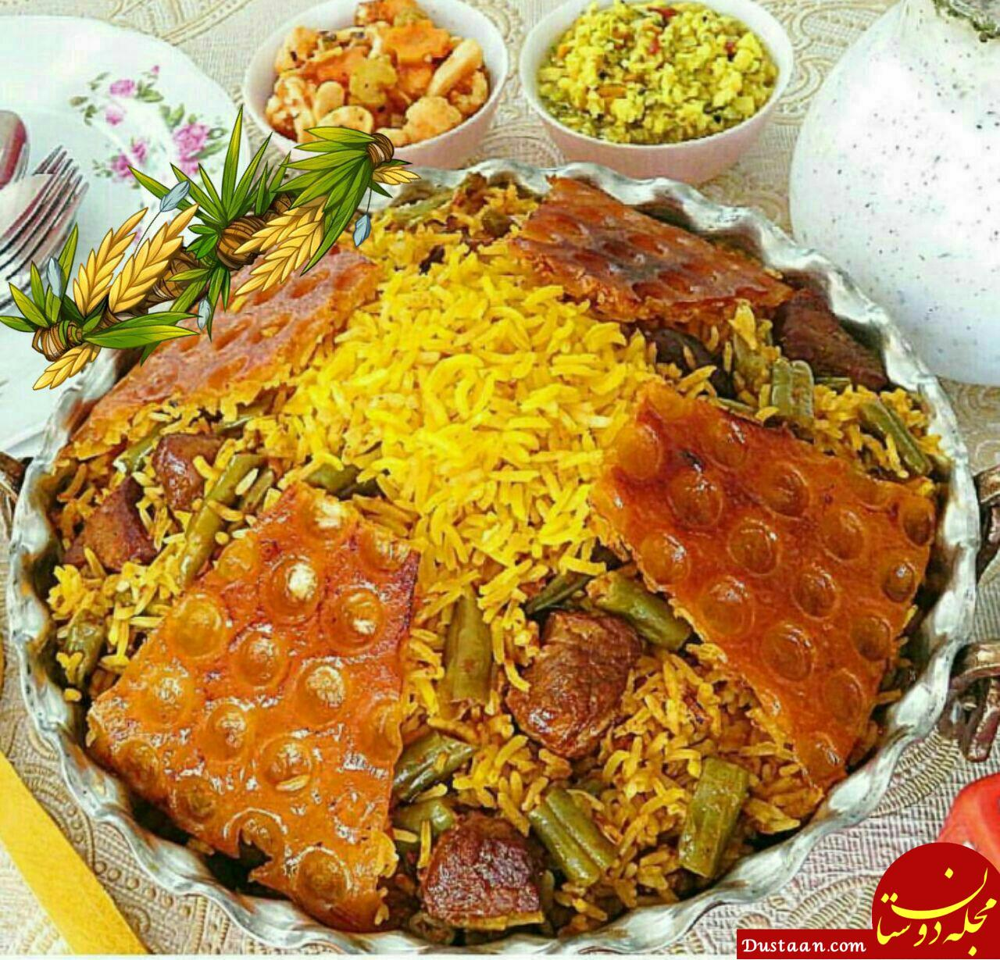

لوبیا پلو

کی از انواع غذاهای پلویی ایرانی است که از محبوبیت خاصی در میان ایرانیان برخوردار است. این غذای خوشمزه با روش های مختلفی طبخ می شود. لوبیا پلو در اکثر مواقع با گوشت چرخ کرده ، مرغ و گوشت تکه ای تهیه می شود. شما می توانید با افزودن ادویه های مختلف عطر و بو این غذا را بیشتر کنید و به دلخواه در انتهای پخت کمی گلبرگ گل محمدی روی لوبیا پلو بریزید و در کنار سالاد شیرازی میل کنید. با مقدار موادی که در این دستور آشپزی قرار گرفته است می توانید برای ۴ نفر لوبیا پلو تهیه کنید. در صورتی که می خواهید مقدار کمتر یا بیشتری لوبیا پلو تهیه کنید کافیست مقدار مواد را ضرب یا تقسیم کنید.
مواد لازم:
- پیاز بزرگ ۱ عدد
- سیر ۲ حبه
- برنج ۴ پیمانه
- لوبیا سبز ۳ پیمانه
- گوجه فرنگی ۲ عدد
- روغن مایع به مقدار لازم
- نمک، فلفل سیاه و زردچوبه: به مقدار لازم
- گوشت چرخ کرده ۴۰۰ گرم
- رب گوجه فرنگی ۲ ق غذا خوری
طرز تهیه:
- آماده سازی مواد:
- ابتدا پیاز را پوست میگیریم و می شوییم و روی تخته نگینی خرد می کنیم،وگوجه فرنگی ها را شسته و ریز خرد می کنیم ،سیر را نیز پوست می گیریم و می شوییم و مانند پیاز روی تخته نگینی خرد می کنیم.
- تفت دادن پیاز و گوشت
- در داخل تابه کمی زردچوبه و روغن می ریزیم و روی شعله کم می گذاریم تا داغ شود ،سپس پیاز را در تابه ریخته و تفت می دهیم تا سبک و شیشه ای شود سپس سیر را نیز اضافه میکنیم و تفت می دهیم تا نرم شوند،
- سپس گوشت چرخ کرده را به همراه فلفل سیاه و ادویه کاری می افزاییم و تفت می دهیم تا رنگ گوشت کاملا تغییر کند.
-
آماده سازی لوبیا سبز
- در همین حین لوبیا سبز ها را می شوریم و در آبکشی قرار می دهیم تا آب اضافه آن خارج شود،آن وقت روی تخته خرد می کنیم، بعد گوجه های خرد شده را به گوشت اضافه میکنیم و خوب مواد را زیر و رو میکنیم و تفت می دهیم تا جایی که کاملا آب گوشت و گوجه تبخیر شود.
- افزودن لوبیا
- در ادامه لوبیا خرد شده را با رب گوجه فرنگی و کمی دارچین و نمک به مواد می افزاییم و تفت میدهیم تا کمی لوبیا ها نرم شود،پس از آن تابه را از روی شعله بر میداریم و به کناری میگذاریم تا مواد لوبیا پلو خنک شود.
-
جوشاندن برنج
- در قابلمه ای که برنج را درآن قصد دارید طبخ کنیم آب و نمک میریزیم و در قابلمه را میگذاریم و حرارت شعله را زیاد میکنیم تا آب سریع به جوش بیاید،برنج را دو مرتبه میشوییم و آب آن را خارج میکنیم و داخل آب در حال جوش میریزیم و صبر میکنیم تا برنج کمی نرم شود در حدی که زیر دندان کمی سفت باشد،
- ن وقت زمان آبکش کردن آن است،پس برنج را آبکشی میکنیم و در کف قابلمه روغن میریزیم و اگر تمایل داشتید سیب زمینی یا نان برای ته دیگ در روی روغن می گذاریم.
- پخت لوبیا پلو
- بعد کمی از برنج را میریزیم و روی آن مقداری از مواد لوبیا و مجددا یک لایه برنج میریزیم و روی آن مواد لوبیا ،همین طور ادامه میدهیم تا مواد لوبیا پلو تمام شود،بعد در قابلمه را میگذاریم و ابتدا برای ۳الی۵ دقیقه با حرارت متوسط رو به بالا اجازه میدهیم تا پلو بخار کند سپس حرارت را کم میکنیم تا خوب لوبیا پلو دم بکشد. در مرحله پایانی که غذا آماده شد لوبیا پلو را خوب زیر و رو کنید و کمی روغن به پلو بزنید و مخلوط کنید سپس در دیس بکشید و با مواد لوبیا پلو آن را تزئین کنید